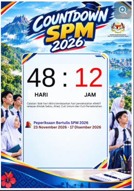

--
HARI
:
--
JAM
MENYELARASKAN MASA...
Countdown diselaraskan dengan masa internet apabila dipaparkan melalui GitHub Pages.

Countdown diselaraskan dengan masa internet apabila dipaparkan melalui GitHub Pages.